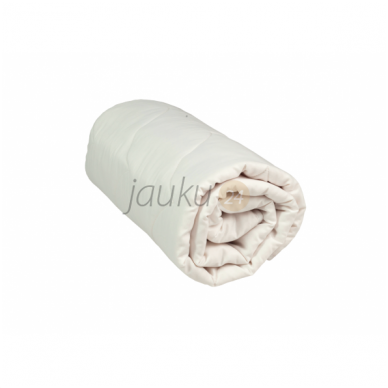

Rūbeliai kūdikiams internetu gera kaina
Kategorijos
Akcijos Vežimėliai ir nešioklės Automobilinės kėdutės Maitinimui ir žindymui Sauskelnės ir higienos prekės Vaiko kambarys Mamų prekės Drabužiai ir avalynė Vežimėliai ir nešioklės Visi 3 dalių vežimėliai / trys viename Vežimėlių dalys 2 dalių vežimėliai / du viename Sportiniai vežimėliai Dvynukų, trynukų vežimėliai Vežimėlių priedai Nešioklės ir priedai Automobilinės kėdutės Visi Grupė 0/0+ (0-13kg) Grupė 0/1/2 (9-18kg) Grupė 0/1 (0-18kg) Grupė 0+/1/2/3 (0-36 kg) Grupė 1 (9-25kg) Grupė 1/2/3 (9-36 kg) Grupė 2/3 (15-36kg) Automobilinės kėdutės-paaukštinimai (15-36kg) Aksesuarai ir priedai Maitinimui ir žindymui Visi Žindymas Čiulptukai ir kramtukai Maitinimui Valgymas Maistas ir gaminimas Maitinimo kėdutės Maistelis Seilinukai ir šluostukai Sauskelnės ir higienos prekės Visi Sauskelnės Sauskelnių keitimas Viskas maudynėms Higienos ir sveikatos priemonės Pratinamės prie puoduko Vaiko kambarys Visi Gultukai Vaiko lavinimui ir žaidimams Lovos ir čiužiniai Baldai ir kiti prietaisai Patalynė Vaiko saugumui Mamų prekės Visi Nėščiosioms Apatinis trikotažas Mamos kosmetika Į gimdymo namus Žindymo ir miego pagalvės Drabužiai ir avalynė Visi Kūdikiams (50-86 cm) Vaikų drabužiai Apatiniai drabužiai Lauko drabužiai Išeiginiai drabužėliai Stiliaus aksesuarai Avalynė Populiariausi prekių ženklai Visi3 dalių vežimėliai / trys viename
2 dalių vežimėliai / du viename
Vežimėlių dalys
Sportiniai vežimėliai
Dvynukų, trynukų vežimėliai
Vežimėlių priedai
Nešioklės ir priedai
3 dalių vežimėliai / trys vienameKINDERKRAFT
ANEX
Milli
Vežimėlių dalys Adapteriai Buomeliai Stogeliai Laipteliai Ratai Rankenos
Vežimėlių lopšiai
Vežimėlių rėmai
Vežimėlių sportinės dalys
2 dalių vežimėliai / du viename
Noordi 2 in 1
Milli 2 in 1
Anex 2 in 1
Sportiniai vežimėliai Skėtuko tipo vežimėliaiJoie
Valco baby
Dvynukų, trynukų vežimėliaiPeg Perego
ABC design
Valco baby
Vežimėlių priedai Įdėklai, čiužinukai Kojų užklotai Žaislai Kiti priedai Skėčiai
Puodelio laikikliai ir kiti priedai
Vokeliai
Apsaugos nuo lietaus ir uodų
Nešioklės ir priedaiNešioklės
Naujausios kolekcijos
VisiGrupė 0/0+ (0-13kg)
Grupė 0/1 (0-18kg)
Grupė 0/1/2 (9-18kg)
Grupė 1 (9-25kg)
Grupė 0+/1/2/3 (0-36 kg)
Grupė 1/2/3 (9-36 kg)
Grupė 2/3 (15-36kg)
Automobilinės kėdutės-paaukštinimai (15-36 kg)
Aksesuarai ir priedai
Grupė 0/0+ (0-13kg)Maxi Cosi
Britax-Romer
Joie
Grupė 0/1/2 (9-18kg)Chicco
Britax Römer
Maxi Cosi
Grupė 0/1 (0-18kg)Britax Römer
Cybex
Joie
Grupė 0+/1/2/3 (0-36 kg)Milli
Joie
Grupė 1 (9-25kg)
Milli
Nania
Grupė 1/2/3 (9-36 kg)
Milli
RECARO
KINDERKRAFT
Grupė 2/3 (15-36kg)Recaro
Maxi Cosi
Britax Römer
Automobilinės kėdutės-paaukštinimai (15-36kg)Peg Perego
Milli
Aksesuarai ir priedaiUžvalkalai
Bazės ir adapteriai
Apsaugos nuo saulės
Kiti priedai
Visi
Žindymas
Čiulptukai ir kramtukai
Seilinukai ir šluostukai
Maitinimas
Valgymas
Maistas ir gaminimas
Maitinimo kėdutės
Maistelis
ŽindymasPientraukiai ir priedai
Maitinimo pagalvės
Liemenėlės įdėklai
Antspeniai
Nutraukto pieno indeliai, maišeliai
Čiulptukai ir kramtukai
Čiulptukai
Priedai
Kramtukai
Maitinimui
Buteliukai
Žindukai
Termopakuotės
Buteliukai nuo dieglių
Kiti priedai
Valgymas Kieto maisto maitintuvai Stalo įrankiai Indų rinkiniai Termosai, termopakuotės Užkandžių indeliai Silikoniniai padėkliukai Kiti indai
Gertuvės
Puodeliai
Lėkštės ir dubenėliai
Maistas ir gaminimas
Buteliukų šildikliai
Sterilizavimo priemonės
Maisto gaminimo prietaisai
Buteliukų džiovyklė
Maitinimo kėdutės
Maitinimo kėdutės
Maitinimo kėdučių priedai
MaistelisTyrelės
Užkandžiai
Sausainiai, džiūvėsėliai
Pieno mišiniai
Košės
Arbata
Sultys
Seilinukai ir šluostukai
Seilinukai
Veido šluostukai
Visi
Sauskelnės
Sauskelnių keitimas
Pratinamės prie puoduko
Viskas maudynėms
Higienos ir sveikatos priemonės
Sauskelnės Maudymosi kelnaitės Atprastukės VystyklaiSauskelnės
Sauskelnės kelnaitės
Drėgnosios servetėlės
Sauskelnių keitimas
Sauskelnių konteineriai
Vystymo stalai ir komodos
Vystymo lentos ir paklotai
Kelioniniai kilimėliai
Viskas maudynėms Maudynių priedai Vonios kempinės Termometrai į vonią Maudynių žaislai Naujagimio gultukai
Vonelės ir jų stovai
Rankšluosčiai
Vonios kėdutės
Higienos ir sveikatos priemonės Nagų priežiūros priemonės Aspiratoriai Muilai Šampūnai Vonios putos Skalbimo priemonės Šukų rinkiniai Kosmetikos rinkiniai Dantų priežiūros priemonės Higienos priemonių rinkiniai Priemonės nuo vabzdžių Kitos sveikatos priemonės
Kremai, losjonai
Termometrai
Aliejai
Šildyklės
Pratinamės prie puoduko
Naktipuodžiai
Mokomieji dangčiai
Laipteliai
Visi
Gultukai
Vaiko lavinimas ir žaidimai
Lovos ir čiužiniai
Baldai ir kiti prietaisai
Patalynė
Vaiko saugumui
GultukaiElektriniai gultukai
Balansiniai gultukai
Kūdikių sūpynės
Gultukų priedai
Vaiko lavinimui ir žaidimams
Žaidimų maniežai
Žaidimų kilimėliai
Sūpuoklės, arkliukai
Vaikštynės ir šokliukai
Lovos ir čiužiniai
Lovytės
Kelioninės lovytės
Čiužiniai
Lopšiai
Lovytės žaislai ir migdukai
Lovyčių priedai
Baldai ir kiti prietaisai
Spintos, komodos
Naktinės lemputės
Žaislų dėžės
Stalai, kėdės, lentynėlės
Vystymo lentos
Drėkintuvai ir drėgmės sugėrikliai
Patalynė Balta patalynė Užvalkalų kompletai Pagalvės Neperšlampieji paklotai Paklodės Užvalkalai
Pledukai
Lovytės apsauga
Baldakimai
Vaiko saugumui
Garso ir vaizdo monitoriai
Apsauginės tvorelės
Kambario apsaugos
Visi
Apatinis trikotažas
Mamos kosmetika
Į gimdymo namus
Žindymo ir miego pagalvės
Nėščiosioms Palaidinės ir marškinėliai Megztiniai Suknelės ir sijonai Kelnės ir kombinezonai Džinsai Striukės ir paltai Kiti drabužiai Apatinis trikotažasLiemenėlės
Kelnaitės
Diržai ir korsetai
Pėdkelnės
Kita
Mamos kosmetikaKūno priežiūros priemonės
Spenelių kremai ir kompresai
Į gimdymo namus Tinklinės arba vienkartinės kelnaitės Vienkartiniai paklotai Antspeniai Krūtų apsauginiai gaubteliai Pientraukiai Korsetai po gimdymoMaitinimo liemenėlės
Liemenėlės įdėklai
Įklotai
Žindymo ir miego pagalvės
Žindymo pagalvės
Miego ir žindymo pagalvės
Visi
Kūdikiams (50–86 cm)
Mergaitėms
Berniukams
Apatiniai drabužiai
Lauko drabužiai
Stiliaus aksesuarai
Išeiginiai drabužiai
Avalynė
Kūdikiams (50-86 cm) Ankstukams Marškinėliai Miegmaišiai Kelnytės Drabužėlių komplektai Kaklaskarės Pirštinytės Kepurytės Kojinytės ir batukaiSmėlinukai, siaustinukai
Šliaužtinukai, kombinezonai
Pirmųjų drabužėlių kraiteliai
Vaikų drabužiai Marškinėliai ir palaidinės Bliuzonai ir megztiniai Švarkeliai ir liemenės Suknelės ir sijonai Kelnės ir šortai Komplektai
Berniukams
Mergaitėms
Naujos kolekcijos!
Apatiniai drabužiai Kelnaitės Apatiniai marškinėliai Rinkinukai Pižamos Chalatai Maudymosi kostiumėliai, glaudės Kojinės Pėdkelnės
Berniukams
Mergaitėms
Lauko drabužiai Paltukai Lietpalčiai Pašiltintos kelnės Šilumą sulaikantys drabužiai Kepurės, šalikai Pirštinės
Striukės
Kombinezonai
Išeiginiai drabužėliaiSuknelės
Kostiumai
Batukai
Stiliaus aksesuarai Papuošalai Rankinės, kuprinės Laikrodžiai Diržai Kaklaskarės Plaukų aksesuarai Petnešos, peteliškės, kaklaraiščiai Kiti aksesuarai
Skarelės, skrybėlės, juostos
Akiniai nuo saulės
Skėčiai
Avalynė Šlepetės Guminiai batai Paplūdimio avalynė Šokių avalynė Batų aksesuarai
Batai
Basutės
Populiariausi prekių ženklaiGrąžinimo forma Užsakymo sekimas Parduotuvės info@babycity.lt I-IV 9-17 val. V 9-14:30 val. Akcijos Vežimėliai ir nešioklės Automobilinės kėdutės Maitinimui ir žindymui Sauskelnės ir higienos prekės Vaiko kambarys Mamų prekės Drabužiai ir avalynė Visi 3 dalių vežimėliai / trys viename Vežimėlių dalys 2 dalių vežimėliai / du viename Sportiniai vežimėliai Dvynukų, trynukų vežimėliai Vežimėlių priedai Nešioklės ir priedai
3 dalių vežimėliai / trys viename
2 dalių vežimėliai / du viename
Vežimėlių dalys
Sportiniai vežimėliai
Dvynukų, trynukų vežimėliai
Vežimėlių priedai
Nešioklės ir priedai
KINDERKRAFT
ANEX
Milli
Adapteriai Buomeliai Stogeliai Laipteliai Ratai Rankenos
Vežimėlių lopšiai
Vežimėlių rėmai
Vežimėlių sportinės dalys
Noordi 2 in 1
Milli 2 in 1
Anex 2 in 1
Skėtuko tipo vežimėliaiJoie
Valco baby
Peg Perego
ABC design
Valco baby
Įdėklai, čiužinukai Kojų užklotai Žaislai Kiti priedai Skėčiai
Puodelio laikikliai ir kiti priedai
Vokeliai
Apsaugos nuo lietaus ir uodų
Nešioklės
Naujausios kolekcijos
Visi Grupė 0/0+ (0-13kg) Grupė 0/1/2 (9-18kg) Grupė 0/1 (0-18kg) Grupė 0+/1/2/3 (0-36 kg) Grupė 1 (9-25kg) Grupė 1/2/3 (9-36 kg) Grupė 2/3 (15-36kg) Automobilinės kėdutės-paaukštinimai (15-36kg) Aksesuarai ir priedaiGrupė 0/0+ (0-13kg)
Grupė 0/1 (0-18kg)
Grupė 0/1/2 (9-18kg)
Grupė 1 (9-25kg)
Grupė 0+/1/2/3 (0-36 kg)
Grupė 1/2/3 (9-36 kg)
Grupė 2/3 (15-36kg)
Automobilinės kėdutės-paaukštinimai (15-36 kg)
Aksesuarai ir priedai
Maxi Cosi
Britax-Romer
Joie
Chicco
Britax Römer
Maxi Cosi
Britax Römer
Cybex
Joie
Milli
Joie
Milli
Nania
Milli
RECARO
KINDERKRAFT
Recaro
Maxi Cosi
Britax Römer
Peg Perego
Milli
Užvalkalai
Bazės ir adapteriai
Apsaugos nuo saulės
Kiti priedai
Visi Žindymas Čiulptukai ir kramtukai Maitinimui Valgymas Maistas ir gaminimas Maitinimo kėdutės Maistelis Seilinukai ir šluostukai
Žindymas
Čiulptukai ir kramtukai
Seilinukai ir šluostukai
Maitinimas
Valgymas
Maistas ir gaminimas
Maitinimo kėdutės
Maistelis
Pientraukiai ir priedai
Maitinimo pagalvės
Liemenėlės įdėklai
Antspeniai
Nutraukto pieno indeliai, maišeliai
Čiulptukai
Priedai
Kramtukai
Buteliukai
Žindukai
Termopakuotės
Buteliukai nuo dieglių
Kiti priedai
Kieto maisto maitintuvai Stalo įrankiai Indų rinkiniai Termosai, termopakuotės Užkandžių indeliai Silikoniniai padėkliukai Kiti indai
Gertuvės
Puodeliai
Lėkštės ir dubenėliai
Buteliukų šildikliai
Sterilizavimo priemonės
Maisto gaminimo prietaisai
Buteliukų džiovyklė
Maitinimo kėdutės
Maitinimo kėdučių priedai
Tyrelės
Užkandžiai
Sausainiai, džiūvėsėliai
Pieno mišiniai
Košės
Arbata
Sultys
Seilinukai
Veido šluostukai
Visi Sauskelnės Sauskelnių keitimas Viskas maudynėms Higienos ir sveikatos priemonės Pratinamės prie puoduko
Sauskelnės
Sauskelnių keitimas
Pratinamės prie puoduko
Viskas maudynėms
Higienos ir sveikatos priemonės
Maudymosi kelnaitės Atprastukės VystyklaiSauskelnės
Sauskelnės kelnaitės
Drėgnosios servetėlės
Sauskelnių konteineriai
Vystymo stalai ir komodos
Vystymo lentos ir paklotai
Kelioniniai kilimėliai
Maudynių priedai Vonios kempinės Termometrai į vonią Maudynių žaislai Naujagimio gultukai
Vonelės ir jų stovai
Rankšluosčiai
Vonios kėdutės
Nagų priežiūros priemonės Aspiratoriai Muilai Šampūnai Vonios putos Skalbimo priemonės Šukų rinkiniai Kosmetikos rinkiniai Dantų priežiūros priemonės Higienos priemonių rinkiniai Priemonės nuo vabzdžių Kitos sveikatos priemonės
Kremai, losjonai
Termometrai
Aliejai
Šildyklės
Naktipuodžiai
Mokomieji dangčiai
Laipteliai
Visi Gultukai Vaiko lavinimui ir žaidimams Lovos ir čiužiniai Baldai ir kiti prietaisai Patalynė Vaiko saugumui
Gultukai
Vaiko lavinimas ir žaidimai
Lovos ir čiužiniai
Baldai ir kiti prietaisai
Patalynė
Vaiko saugumui
Elektriniai gultukai
Balansiniai gultukai
Kūdikių sūpynės
Gultukų priedai
Žaidimų maniežai
Žaidimų kilimėliai
Sūpuoklės, arkliukai
Vaikštynės ir šokliukai
Lovytės
Kelioninės lovytės
Čiužiniai
Lopšiai
Lovytės žaislai ir migdukai
Lovyčių priedai
Spintos, komodos
Naktinės lemputės
Žaislų dėžės
Stalai, kėdės, lentynėlės
Vystymo lentos
Drėkintuvai ir drėgmės sugėrikliai
Balta patalynė Užvalkalų kompletai Pagalvės Neperšlampieji paklotai Paklodės Užvalkalai
Pledukai
Lovytės apsauga
Baldakimai
Garso ir vaizdo monitoriai
Apsauginės tvorelės
Kambario apsaugos
Visi Nėščiosioms Apatinis trikotažas Mamos kosmetika Į gimdymo namus Žindymo ir miego pagalvės
Apatinis trikotažas
Mamos kosmetika
Į gimdymo namus
Žindymo ir miego pagalvės
Palaidinės ir marškinėliai Megztiniai Suknelės ir sijonai Kelnės ir kombinezonai Džinsai Striukės ir paltai Kiti drabužiaiLiemenėlės
Kelnaitės
Diržai ir korsetai
Pėdkelnės
Kita
Kūno priežiūros priemonės
Spenelių kremai ir kompresai
Tinklinės arba vienkartinės kelnaitės Vienkartiniai paklotai Antspeniai Krūtų apsauginiai gaubteliai Pientraukiai Korsetai po gimdymoMaitinimo liemenėlės
Liemenėlės įdėklai
Įklotai
Žindymo pagalvės
Miego ir žindymo pagalvės
Visi Kūdikiams (50-86 cm) Vaikų drabužiai Apatiniai drabužiai Lauko drabužiai Išeiginiai drabužėliai Stiliaus aksesuarai Avalynė Populiariausi prekių ženklai
Kūdikiams (50–86 cm)
Mergaitėms
Berniukams
Apatiniai drabužiai
Lauko drabužiai
Stiliaus aksesuarai
Išeiginiai drabužiai
Avalynė
Ankstukams Marškinėliai Miegmaišiai Kelnytės Drabužėlių komplektai Kaklaskarės Pirštinytės Kepurytės Kojinytės ir batukaiSmėlinukai, siaustinukai
Šliaužtinukai, kombinezonai
Pirmųjų drabužėlių kraiteliai
Marškinėliai ir palaidinės Bliuzonai ir megztiniai Švarkeliai ir liemenės Suknelės ir sijonai Kelnės ir šortai Komplektai
Berniukams
Mergaitėms
Naujos kolekcijos!
Kelnaitės Apatiniai marškinėliai Rinkinukai Pižamos Chalatai Maudymosi kostiumėliai, glaudės Kojinės Pėdkelnės
Berniukams
Mergaitėms
Paltukai Lietpalčiai Pašiltintos kelnės Šilumą sulaikantys drabužiai Kepurės, šalikai Pirštinės
Striukės
Kombinezonai
Suknelės
Kostiumai
Batukai
Papuošalai Rankinės, kuprinės Laikrodžiai Diržai Kaklaskarės Plaukų aksesuarai Petnešos, peteliškės, kaklaraiščiai Kiti aksesuarai
Skarelės, skrybėlės, juostos
Akiniai nuo saulės
Skėčiai
Šlepetės Guminiai batai Paplūdimio avalynė Šokių avalynė Batų aksesuarai
Batai
Basutės
Drabužiai ir avalynė Kūdikiams (50–86 cm)Kūdikiams (50–86 cm)
Rūšiuoti Geriausi pasiūlymai Geriausi pasiūlymai Mažiausia kaina Pavadinimas: A-Z Pavadinimas: Z-A Kategorija Visi Kelnytės Smėlinukai, siaustinukai Pirštinytės Marškinėliai Kepurytės Miegmaišiai Šliaužtiniai, kombinezonai Drabužėlių komplektai Kojinytės ir batukai Kaklaskarės Išvalyti filtrą Kaina 1.99 € - 176 € Išvalyti filtrą Amžius Ankstukai - 12+ m. Ankstukai Naujagimiai 1 - 3 mėn. 4 - 6 mėn. 7 - 9 mėn. 10 - 12 mėn. 1 - 1.5 m. 1.5 - 2 m. 2 - 2.5 m. 2.5 - 3 m. 3 - 3.5 m. 3.5 - 4 m. 4 - 4.5 m. 4.5 - 5 m. 5 - 5.5 m. 5.5 - 6 m. 6 - 6.5 m. 6.5 - 7 m. 7 - 7.5 m. 7.5 - 8 m. 8 - 8.5 m. 8.5 - 9 m. 9 - 9.5 m. 9.5 - 10 m. 10 - 10.5 m. 10.5 - 11 m. 11 - 11.5 m. 11.5 - 12 m. 12+ m. Išvalyti filtrą Dydis Visi S Ankstukams Naujagimiui One Size 1 2 3 4 10 12 15 16 18 19 36 38 40 42 44 46 48 50/56 50 52 56 56/62 62/68 62 68 68/74 74 74/80 80 86 92 98 104 110 116 122 128 134 140 146 152 158 164 Išvalyti filtrą Lytis Visi Tinka visiems Berniukams Mergaitėms Išvalyti filtrą Prekės ženklas Visi BABYBLOOMS CAN GO CHEEKY CHOMPERS COCCODRILLO COLUMBIA ENGEL HUPPA JOLLEIN LASSIE LODGER LORITA MAYORAL MILLI MOTHERCARE NAME IT NINI OVS PINOKIO QUINNY REIMA VILAURITA Nėra rezultatų Išvalyti filtrą Spalva Visi Išvalyti filtrąPasirinkti parduotuvę
Kurių parduotuvų likučius norite matyti:
BabyCity / ToyCity (PC Nordika), Vilnius BabyCity / ToyCity („Ogmios miestas“), Vilnius BabyCity / ToyCity, Kaunas BabyCity / ToyCity, Klaipėda BabyCity / ToyCity, Šiauliai Filtruoti parduotuves Nauja prekė TOP Yra pasirinktoje parduotuvėjePINOKIO Siausitnukas Ecru Bears club 62
Atsiprašome, laikinai neturime 7,99 € Į krepšelį Nauja prekė TOP Yra pasirinktoje parduotuvėjePINOKIO Smėlinukas Brown Bears club 62
Atsiprašome, laikinai neturime 9,49 € Į krepšelį Nauja prekė TOP Yra pasirinktoje parduotuvėjePINOKIO Susegamas smėlinukas Grey Bears club 56
Atsiprašome, laikinai neturime 10,49 € Į krepšelį Nauja prekė TOP Yra pasirinktoje parduotuvėjePINOKIO Smėlinukas Brown Bears club 74
Atsiprašome, laikinai neturime 9,49 € Į krepšelį Nauja prekė TOP Yra pasirinktoje parduotuvėjePINOKIO Kombinezonas su pėdutėmis Grey Bears club 56
Atsiprašome, laikinai neturime 14,99 € Į krepšelį Nauja prekė TOP Yra pasirinktoje parduotuvėjePINOKIO Smėlinukas Brown Bears club 68
Atsiprašome, laikinai neturime 9,49 € Į krepšelį Nauja prekė TOP Yra pasirinktoje parduotuvėjePINOKIO Susegamas smėlinukas Grey Bears club 62
Atsiprašome, laikinai neturime 10,49 € Į krepšelį Nauja prekė TOP Yra pasirinktoje parduotuvėjePINOKIO Susegamas smėlinukas Brown Bears club 68
Atsiprašome, laikinai neturime 10,49 € Į krepšelį Nauja prekė TOP Yra pasirinktoje parduotuvėjePINOKIO Susegamas smėlinukas Ecru Bears club 56
Atsiprašome, laikinai neturime 10,49 € Į krepšelį Nauja prekė TOP Yra pasirinktoje parduotuvėjePINOKIO Kombinezonas su pėdutėmis Grey Bears club 68
Atsiprašome, laikinai neturime 16,99 € Į krepšelį Nauja prekė TOP Yra pasirinktoje parduotuvėjePINOKIO Susegamas smėlinukas Brown Bears club 62
Atsiprašome, laikinai neturime 10,49 € Į krepšelį Nauja prekė TOP Yra pasirinktoje parduotuvėjePINOKIO Susegamas smėlinukas Brown Bears club 56
Atsiprašome, laikinai neturime 10,49 € Į krepšelį Nauja prekė TOP Yra pasirinktoje parduotuvėjePINOKIO Kombinezonas su pėdutėmis Grey Bears club 62
Atsiprašome, laikinai neturime 14,99 € Į krepšelį Nauja prekė TOP Yra pasirinktoje parduotuvėjePINOKIO Susegamas smėlinukas Ecru Bears club 62
Atsiprašome, laikinai neturime 10,49 € Į krepšelį Nauja prekė TOP Yra pasirinktoje parduotuvėjePINOKIO Kombinezonas su pėdutėmis Checker Bears club 74
Atsiprašome, laikinai neturime 45,99 € Į krepšelį Nauja prekė TOP Yra pasirinktoje parduotuvėjePINOKIO Kombinezonas su pėdutėmis Checker Bears club 68
Atsiprašome, laikinai neturime 45,99 € Į krepšelį TOP Yra pasirinktoje parduotuvėjePINOKIO Kombinezonas Unicorn Grey 1-1-136-100I-074SZ
Atsiprašome, laikinai neturime 13,99 € Į krepšelį TOP Yra pasirinktoje parduotuvėjePINOKIO Kelnytės Unicorn Pink 1-1-136-520K-068RO
Atsiprašome, laikinai neturime 12,49 € Į krepšelį TOP Yra pasirinktoje parduotuvėjePINOKIO Kelnytės Unicorn Pink 1-1-136-520K-074RO
Atsiprašome, laikinai neturime 12,49 € Į krepšelį TOP Yra pasirinktoje parduotuvėjePINOKIO Kelnytės Unicorn Pink 1-1-136-520K-080RO
Atsiprašome, laikinai neturime 12,49 € Į krepšelį TOP Yra pasirinktoje parduotuvėjePINOKIO Kelnytės Unicorn Pink star 1-1-136-550A-062RS
Atsiprašome, laikinai neturime 7,49 € Į krepšelį TOP Yra pasirinktoje parduotuvėjePINOKIO Švarkelis Unicorn Ecru 1-1-136-050A-056EC
Atsiprašome, laikinai neturime 7,49 € Į krepšelį TOP Yra pasirinktoje parduotuvėjePINOKIO Švarkelis Unicorn Ecru 1-1-136-050A-062EC
Atsiprašome, laikinai neturime 7,49 € Į krepšelį TOP Yra pasirinktoje parduotuvėjePINOKIO Tunika Unicorn Ecru 1-1-136-770C-068EC
Atsiprašome, laikinai neturime 9,99 € Į krepšelį Palyginti prekes ( ) Palyginti Išvalyti 1 2 3 4 5 6 7 8 PirmynDrabužiai kūdikiams – bene maloniausi pirkiniai besilaukiant ar jau auginant mažylį, ypač kai yra iš ko rinktis. Juk kiekviena mama nori, kad mažylis būtų ne tik šiltai aprengtas, jaustųsi patogiai, bet ir atrodytų gražiai. Dabar vis dažniau mamos derina mažylių aprangą ir savo ar kitų šeimos narių, tad rūbai kūdikiams tampa bendro stiliaus detale. Rūbai kūdikiams mažylį lydi nuo pat pirmųjų jo gyvenimo dienų, tad pasirinkti teisingai yra svarbu. Šaunu jei jūsų kūdikių rūbeliai yra sukomplektuoti po keletą ar daugiau rinkinių įvairiems gyvenimo atvejams. Nes vaikus auginantys mamos ir tėčiai patvirtins, kaip dažnai yra keičiami kūdikių drabužėliai. Mažieji pasaulio atradėjai mokosi savarankiškai valgyti įvairų maistą, sėdėti ant puoduko, šliaužti, ropoti ir išmokti vis kažką naujo. Pamokos ir nuotykiai tęsiasi visą dieną. Tačiau pamokų metu dėmes ir netikėtumus sugeria rūbeliai kūdikiams. Kūdikių rūbeliai yra skubami skalbti, keisti ir vilkti naujais. Tada ir paaiškėja, kad spintos turinys nėra toks gausus, o rūbeliai kūdikiams yra dar ir labai sparčiai išaugami. Todėl mamos ir tėčiai žino, kad drabužiai kūdikiams yra ta spintos dalis, kurią reikia vis atnaujinti ir atnaujinti. Siekiame, kad mažylis ne tik atrodytų gražiai, būtų švarus, bet ir galėtų patogiai tyrinėti pasaulį, todėl rūbeliai kūdikiams turi nevaržyti. Taip pat rūbeliai kūdikiams yra praktiška ir graži dovana lankant ar sveikinant naują žmogutį. Rūbeliai kūdikiams yra stilingi, spalvingi, šiltų atspalvių tad su kiekvienu pirkiniu atnešate mažytę šventę. Dovanojami drabužiai kūdikiams netiesiogiai parodo mūsų rūpestį ir šiltus jausmus mažyliui. Norime, kad jam būtų šilta, patogu, o rūbeliai kūdikiams būtų gražūs ir mieli. Be to rūbai kūdikiams yra labai praktiška dovana, kurią įvertins kiekvienas vaikus auginantis tėvas. Todėl BabyCity parduotuvės asortimente rasite pilną kūdikio garderobą: kūdikių suknelės, kelnės, šliaužtinukai, smėlinukai ir kiti rūbeliai kūdikiams laukia jūsų. Mūsų parduotuvėse rasite atrinktus, tėvelių patikrintus ir pamėgtus prekės ženklus, kurių kūdikių rūbeliai pasižymi kokybe ir atsparumu. Kūdikių rūbeliai mūsų parduotuvėse yra suskirstyti pagal vaikų amžių, turime iš ko rinktis net ir patiems mažiausiems žmogučiams – ankstukams. Kūdikių drabužėliai turi būti ne tik mieli ir švelnūs, bet ir kokybiški, kad atlaikytų dažną skalbimą. Juk puikiai žinome, kaip dažnai tėveliams tenka tai daryti. Tarp BabyCity/ToyCity siūlomų prekės ženklų rasite kokybiškų gamintojų, kurių gaminami rūbai kūdikiams bus kasdieniai jūsų mažylio palydovai.
Pasirinkti parduotuvę Parduotuvės Filtras Užsakymo statusas Grąžinimo forma Parduotuvių darbo laikas Lojalumo programaBENDRA INFORMACIJA
Apie mus Parduotuvių kontaktai Lojalumo programa Naujagimio kraitelis Garantija ir priežiūraINFORMACIJA PIRKĖJUI
Apmokėjimas Pristatymas Grąžinimas Pirkimo taisyklės Susisiekite su mumisMŪSŲ DRAUGAI
Žaislų planeta KidzOne Kotryna Group Babycity.lv Babycity.ee Jukukeskus.ee KidzOne SuomijaPRIVATUMO POLITIKA
Privatumo politika Asmens duomenų tvarkymo formosNaujienlaiškis
Kiekvieną mėnesį mes turime ypatingų pasiūlymų! Prisijunk prie mūsų ir apie juos sužinok pirmas! RegistruotisMoony sauskelnės , Pampers sauskelnės , Bambo sauskelnės , Huggies sauskelnės , Naty sauskelnės
© 2020 Visos teisės saugomos. Kopijuoti informaciją be administracijos sutikimo draudžiamaMūsų tinklalapis naudoja slapukus ir kitas technologijas tam, kad galėtume atvaizduoti techninę internetinės svetainės struktūrą ir turinį. Daugiau informacijos apie slapukus galite rasti čia.
Sutinku